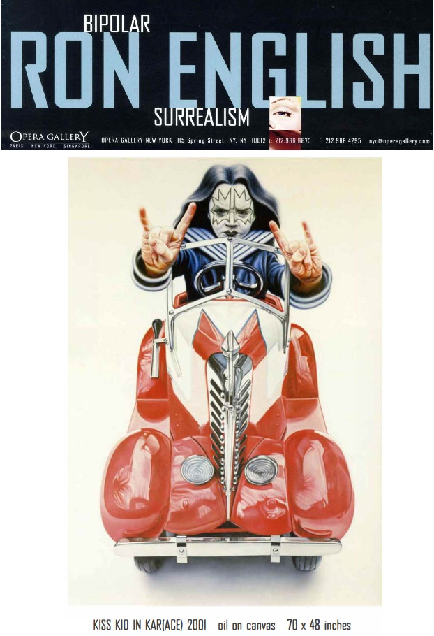
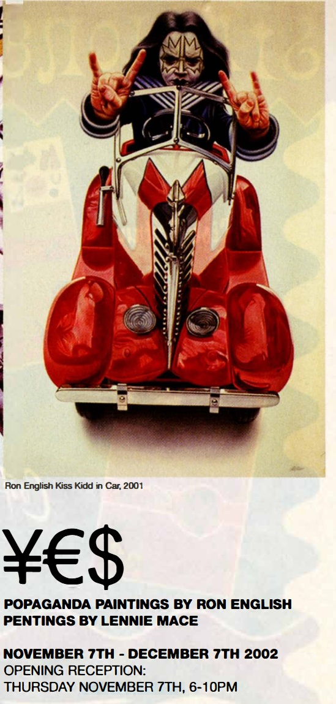
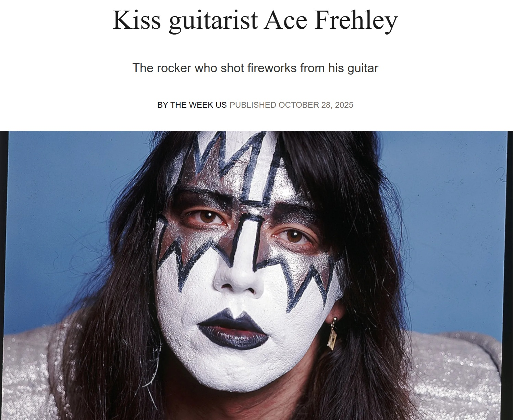

Exhibitions
Bipolar Surrealism, Opera Gallery, New York, New York, US, May 24–June 11, 2001.
¥€$, 111 Minna Gallery, San Francisco, California, US, November 7–December 7, 2002.
Literature
Bipolar Surrealism (New York: Opera Gallery, 2001), exhibition catalogue.
Ron English, Son of Pop: Ron English Paints His Progeny (San Francisco, California: 9mm Books and The Shooting Gallery, 2007), p. 54. ISBN 978-0-9766325-1-1.
Notes
Also known as Kiss Kidd in car.
This work is reproduced in the exhibition catalogue for Bipolar Surrealism, where it is titled Kiss Kid in Kar (Ace).
This work is also reproduced in an unidentified contemporary newspaper or magazine clipping for ¥€$, 111 Minna Gallery, San Francisco, November 7–December 7, 2002, documenting its inclusion in the exhibition.
This painting references Ace Frehley of the band KISS in his signature makeup.
Ancillary Documentation
The following materials document catalogue reproduction, exhibition documentation, Ron English’s personal photo archive, and source imagery connected to the work.



